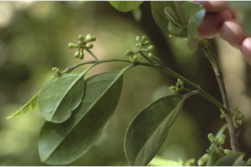
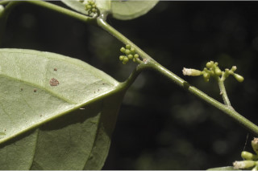
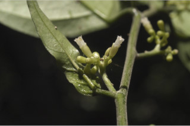
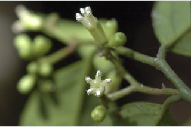
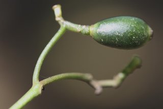
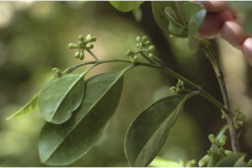
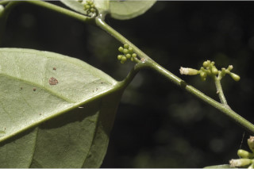
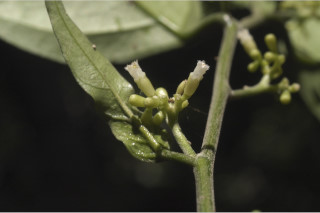
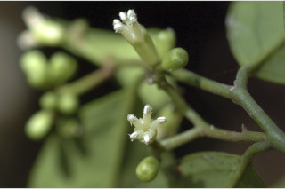
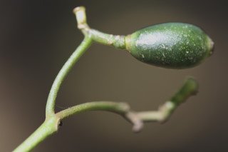

Trees up to 10 m tall.
10 ಮೀ. ಎತ್ತರದವರೆಗಿನ ಮರಗಳು.
10 മീറ്റര്വരെ ഉയരമുളള മരങ്ങള്.
மரங்கள், 10 உயரம் வரை வளரக்கூடியது
Branchlets terete, glabrous.
ಕಿರುಕೊಂಬೆಗಳು ದುಂಡಾಗಿದ್ದು ರೋಮರಹಿತವಾಗಿರುತ್ತವೆ.
അരോമിലമായ ഉരുണ്ട ഉപശാഖകള്.
சிறிய நுனிக்கிளைகள் குறுக்குவெட்டுத் தோற்றத்தில் வளையம் போன்றது, உரோமங்களுடையது.
Leaves simple, alternate, distichous; petiole 0.6-1.4 cm long, canaliculate above, glabrous; lamina 5-11 x 2-4 cm variable in shape, elliptic to obovate, apex bluntly acuminate to obtuse, base acute to cuneate, margin entire or sometimes slightly revolute, coriaceous, glabrous, dull green when dry; midrib canaliculate above; secondary_nerves ca. 4; tertiary_nerves obscure.
ಎಲೆಗಳು ಸರಳವಾಗಿದ್ದು ಪರ್ಯಾಯ ಜೋಡನಾ ಮಾದರಿಯಲ್ಲಿರುತ್ತವೆ ಮತ್ತು ಕಾಂಡದ ಎರಡೂ ಕಡೆ ಎದುರು ಬದರಿನ ಸಾಲಿನಲ್ಲಿರುತ್ತವೆ;ತೊಟ್ಟುಗಳು 0.6 -1.4 ಸೆಂ.ಮೀ. ವರೆಗಿನ ಉದ್ದವಿದ್ದು ಮೇಲ್ಭಾಗದಲ್ಲಿ ಕಾಲುವೆ ಗೆರೆ ಸಮೇತವಿರುತ್ತವೆ;ಪತ್ರಗಳು 5-11X2-4ಸೆಂ.ಮೀ.ಗಾತ್ರ ಹೊಂದಿದ್ದು ಅಂಡವೃತ್ತ-ಬುಗುರಿ ಆಕಾರದಲ್ಲಿದ್ದು (ಆಕಾರದಲ್ಲಿ ವೈವಿಧ್ಯತೆ ಹೊಂದಿರುತ್ತವೆ), ಮೊಂಡಾದ ಕ್ರಮೇಣ ಚೂಪಾಗುವ ಮಾದರಿಯಿಂದ ಚೂಪಾಗಿರದ ರೀತಿಯವರೆಗಿನ ತುದಿ, ಚೂಪಾದ ಅಥವಾ ಬೆಣೆಯಾಕಾರದ ಬುಡ ಮತ್ತು ನಯವಾದ ಅಥವಾ ಕೆಲವು ವೇಳೆ ತುಸುವಾಗಿ ಹಿಂಸುರುಳಿಯಾದ ಅಂಚನ್ನು ಹೊಂದಿರುತ್ತವೆ; ಮೇಲ್ಮೈ ತೊಗಲನ್ನೋಲುವ ಮಾದರಿಯಲಿದ್ದು ರೋಮರಹಿತವಾಗಿರುತ್ತದೆ;ಪತ್ರದ ಮೇಲ್ಮೈ ಒಣಗಿದಾಗ ಮಂದವಾದ ಹಸಿರು ಬಣ್ಣದಲ್ಲಿರುತ್ತದೆ; ಮಧ್ಯನಾಳ ಪತ್ರದ ಮೇಲ್ಭಾಗದಲ್ಲಿ ಕಾಲುವೆ ಗೆರೆ ಸಮೇತವಿರುತ್ತದೆ;ಎರಡನೇ ದರ್ಜೆಯ ನಾಳಗಳು ಅಂದಾಜು 4;ಮೂರನೇ ದರ್ಜೆಯ ನಾಳಗಳು ಅಸ್ಪಷ್ಟ.
ലഘുവായ ഇലകള്, ഏകാന്തര ക്രമത്തില് തണ്ടിന്റെ രണ്ടുഭാഗത്ത് മാത്രമായടുക്കിയതാണ്, ചാലുളള അരോമിലമായ ഇലഞെട്ടിന് 0.6 സെ.മീ മുതല് 1.4 സെ.മീ വരെ നീളം; പത്രഫലകത്തിന് 5 സെ.മീ മുതല് 11 സെ.മീ വരെ നീളവും 2 സെ.മീ മുതല് 4 സെ.മീ വരെ വീതിയും, ആകൃതി ദീര്ഘവൃത്തീയം തൊട്ട് അപഅണ്ഡാകാരം വരെ പലവിധത്തിലാവാം; മുനപ്പില്ലാത്ത ദീര്ഘാഗ്രം തൊട്ട് ഉപകുന്താകാരം വരെയാകാം, പത്രാധാരം നിശിതം തൊട്ട് ആപ്പാകാരം വരെയാകാം, അരികുകള് അവിഭജിതമോ ചിലപ്പോള് ചെറുതായി പുറത്തേക്ക് വളഞ്ഞതോ ആവാം, ചര്മ്മില പ്രകൃതം, അരോമിലം, ഉണങ്ങുമ്പോള് മുഷിഞ്ഞ പച്ചനിറം; മുകളില് ചാലുളള മുഖ്യസിര; ഏതാണ്ട് 4 ജോഡി ദ്വിതീയ ഞരമ്പുകള്; ത്രിതീയഞരമ്പുകള് അപ്രസക്തമാണ്.
இலைகள் தனித்தவை, மாற்றுஅடுக்கமானவை, இருநெடுக்கு வரிசையிலையடுக்கம் (டைஸ்டிக்கஸ்); இலைக்காம்பு 0.6-1.4 செ.மீ. நீளமானது, குறுக்குவெட்டுத் தோற்றத்தில் கேனாலிகுலேட், உரோமங்களற்றது; இலை அலகு 5-11 X 2-4 செ.மீ., வடிவத்தில் வேறுபாடுடையது, நீள்வட்டம் முதல் தலைகீழ் முட்டை வடிவானது, அலகின் நுனி அதிக்கூரியதுடன் முனை மழுங்கியது முதல் மொட்டையானது, அலகின் தளம் கூரியது முதல் ஆப்பு வடிவானது, அலகின் விளிம்பு முழுமையானது அல்லது சிலசமயங்களில் பின்புறம் வளைந்து (ரெவலுட்) காணப்படும், கோரியேசியஸ், உரோமங்களற்றது, உலரும் போது வெளிறிய பச்சை நிறமடைகிறது; மையநரம்பு மேற்புறத்தில் அலகின் பரப்பைவிட பள்ளமானது; இரண்டாம் நிலை நரம்புகள் 4 ஜோடிகள்; மூன்றாம் நிலை நரம்புகள் தெளிவற்றவை.
Flowers polygamodioecious, in short axillary or leaf opposed cymes, white.
ಹೂಗಳು ಸಂಕೀರ್ಣ ಲಿಂಗಿಗಳಾಗಿದ್ದು ಗಂಡು ಮತ್ತು ಹೆಣ್ಣು ಹೂಗಳು ಪ್ರತ್ಯೇಕ ಸಸ್ಯಗಳಲ್ಲಿರುತ್ತವೆ ಮತ್ತು ಅಕ್ಷಾಕಂಕುಳಿನಲ್ಲಿನ ಅಥವಾ ಎಲೆಗಳ ಎದುರಿನ ಮಧ್ಯಾರಂಭಿ ಪುಷ್ಪಮಂಜರಿಯಲ್ಲಿರುತ್ತವೆ ಹಾಗೂ ಬಿಳಿ ಬಣ್ಣ ಹೊಂದಿರುತ್ತವೆ.
വെളുത്ത, ബഹുലിംഗ-ഡയീഷ്യസ് പൂക്കള്, കുറിയ കക്ഷീയമോ ഇലകള്ക്കെതിരായ സൈമുകളായോ ഉണ്ടാകുന്നു.
மலர்கள் ஒர்பாலானவை மற்றும் இருபாலானவை கலந்தவை (பாலிகேமஸ்), ஈரகத்தில் உடையவை, சிறிய சைம் வகை மஞ்சரி, இலைக்கோணங்களில் அல்லது இலைக்கு எதிராகமைந்தவை, வெள்ளை நிறமானது.
Drupe, cylindrical ellipsoid, to 1-1.5 cm; seed 1.
ಡ್ರೂಪ್ಗಳು 1- 1.5 ಸೆಂ.ಮೀ. ಉದ್ದವಿರುತ್ತವೆ ಮತ್ತು ವರ್ತುಲ ಸ್ಥಂಭಾಕೃತಿಯ ಅಂಡವೃತ್ತ ಆಕಾರದಲ್ಲಿರುತ್ತವೆ; ಬೀಜ 1.
ഒറ്റവിത്തുമാത്രമുളള കായ, 1 സെ.മീ തൊട്ട് 1.5 സെ.മീ വരെയുളള സ്തൂപികാര ദീര്ഘഗോളാകാര ഡ്രൂപ്പ് ആണ്.
உள்ளோட்டுத்தசைகனி (ட்ரூப்), உருளை-நீள்வட்டம் போன்றது, 1-1.5 செ.மீ. நீளமானது; விதை ஒன்றுடையது.

 








